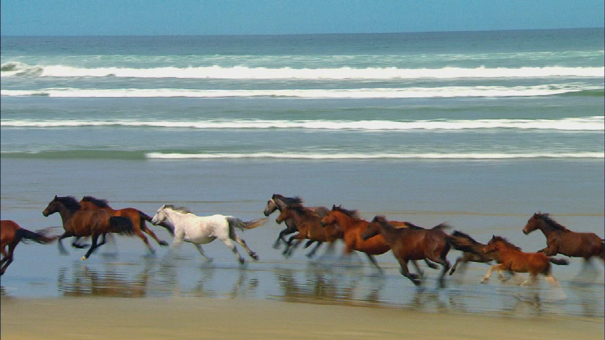
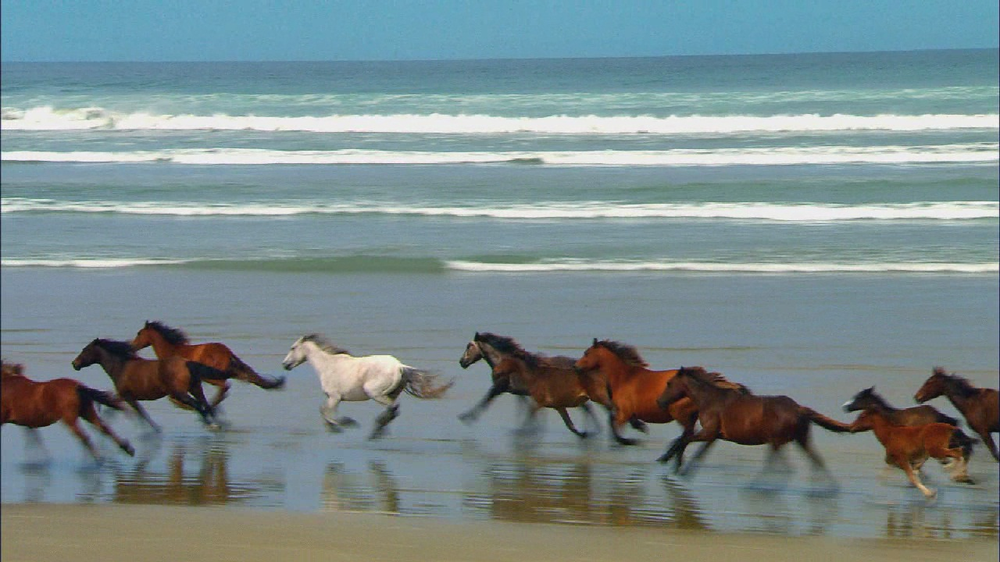
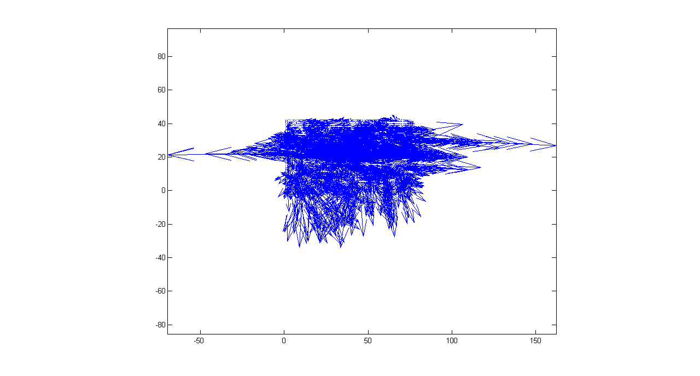
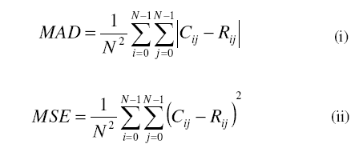
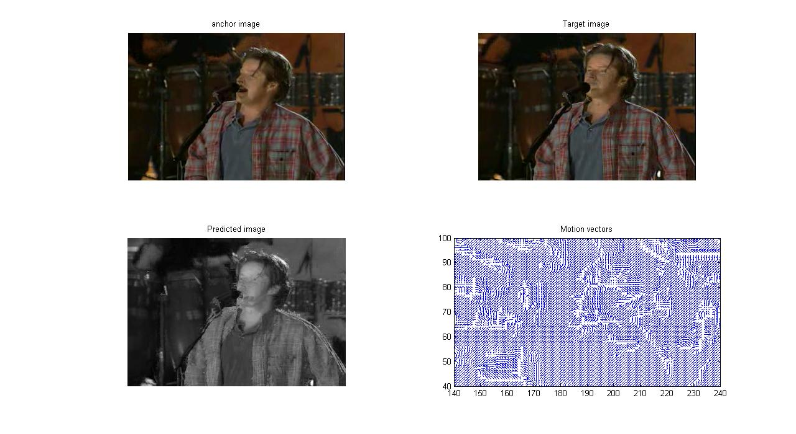
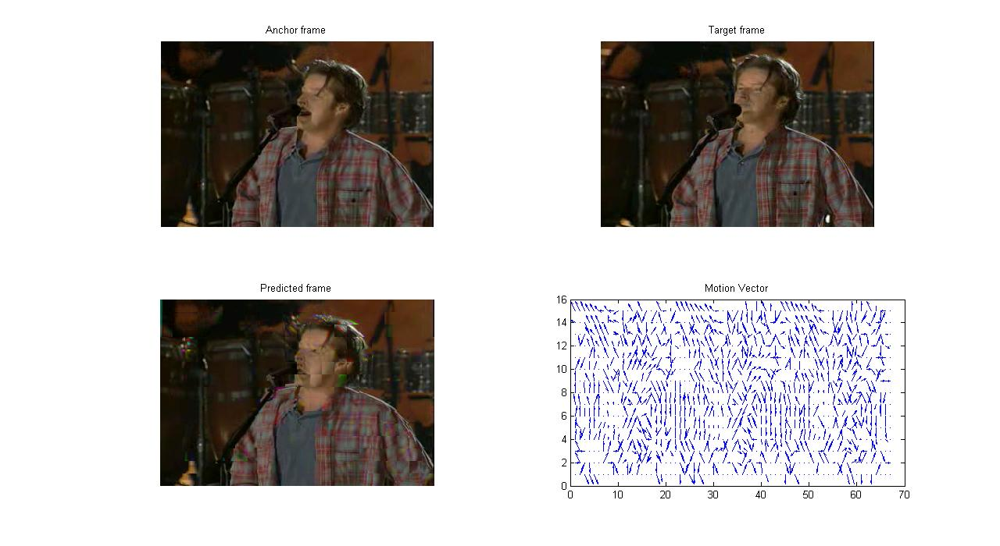
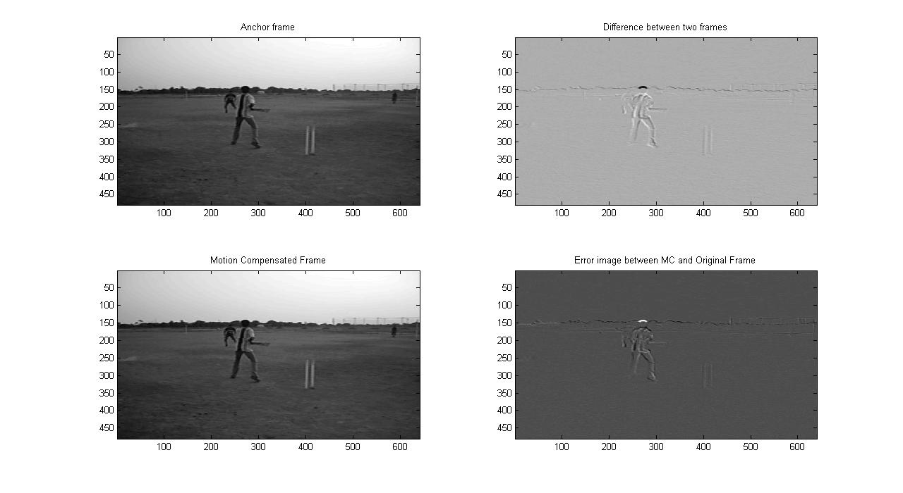
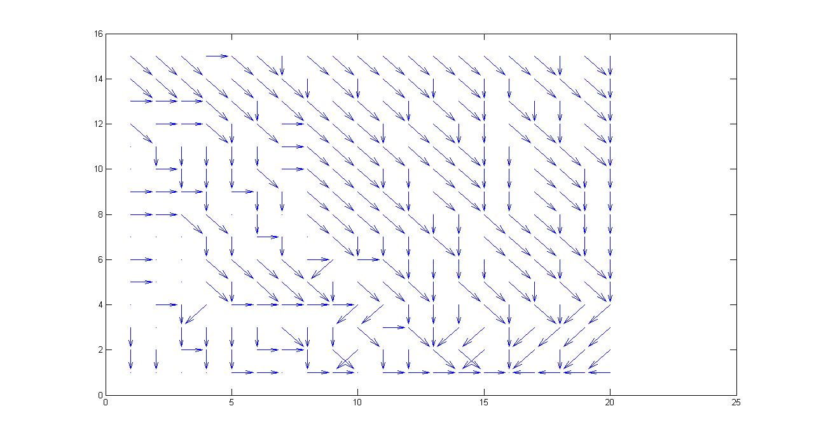
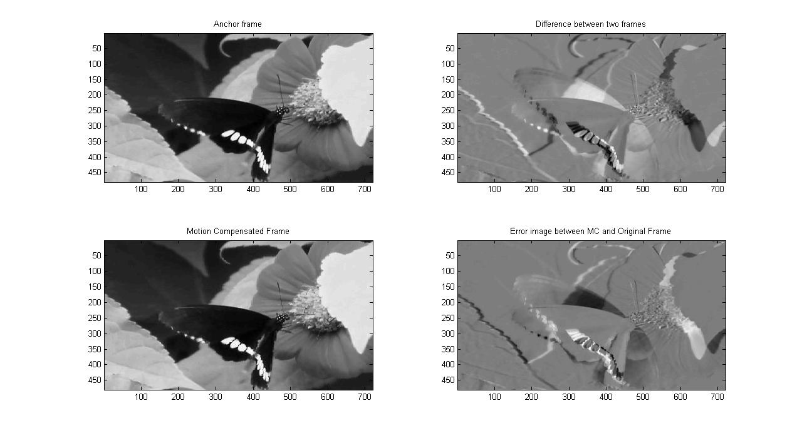
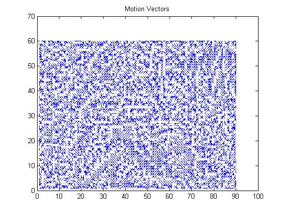

Shankar Jagadeesan
Teaching machines to see and respond

Motion analysis in Digital video stream
The project is about comparing the motion analysis of a digital video stream using the following methods: (a) Optical Flow. (b) Displaced Frame Difference .
Optical flow
Optical flow is an approximation of the local image motion based upon local derivatives in a given sequence of images. That is, in 2D it specifies how much each image pixel moves between adjacent images while in 3D in specifies how much each volume voxel moves between adjacent volumes. The 2D image sequences used here are formed under perspective projection via the relative motion of a camera and scene objects. The 3D volume sequences used here were formed under orthographic projection for a stationary sensor and a moving/deforming object. In both cases, the moving patterns cause temporal varieties of the image brightness. It is assumed that all temporal intensity changes are due to motion only. This is usually true but there are many exceptions. 2D/3D derivatives are usually computed by repeated application of low pass and high pass filters, for example the filters proposed by Simoncelli. Thus the computation of differential optical flow is, essentially, a two-step procedure:
- Measure the spatio-temporal intensity derivatives (which is equivalent to measuring the velocities normal to the local intensity structures)
- Integrate normal velocities into full velocities, for example, either locally via a least squares calculation or globally via a regularization
|  |  |  |
| Frame 1 | Frame 2 | Optical flow |
{kind=link}
{kind=link}
{kind=link}
Displaced Frame Difference
The most popular criterion for motion estimation is to minimize the sum of the errors between the luminance values of every pair of corresponding points between the anchor frame and the tracked frame.There are different motion representations as follows
- Pixel Based
- Block Based
- Region Based
- Global
The underlying supposition behind motion estimation is that the patterns corresponding to objects and background in a frame of video sequence move within the frame to form corresponding objects on the subsequent frame. The idea behind block matching is to divide the current frame into a matrix of ‘macro blocks’ that are then compared with corresponding block and its adjacent neighbors in the previous frame to create a vector that stipulates the movement of a macro block from one location to another in the previous frame. This movement calculated for all the macro blocks comprising a frame, constitutes the motion estimated in the current frame. The search area for a good macro block match is constrained up to p pixels on all fours sides of the corresponding macro block in previous frame. This ‘p’ is called as the search parameter. Larger motions require a larger p, and the larger the search parameter the more computationally expensive the process of motion estimation becomes. Usually the macro block is taken as a square of side 16 pixels, and the search parameter p is 7 pixels. The matching of one macro block with another is based on the output of a cost function. The macro block that results in the least cost is the one that matches the closest to current block. There are various cost functions, of which the most popular and less computationally expensive is Mean Absolute Difference (MAD) given by equation (i). Another cost function is Mean Squared Error (MSE) given by equation (ii).
|  |
{kind=link}
EBMA
For this project we use Exhaustive Block Matching algorithm.This algorithm, also known as Full Search, is the most computationally expensive block matching algorithm of all. This algorithm calculates the cost function at each possible location in the search window. As a result of which it finds the best possible match and gives the highest PSNR amongst any block matching algorithm. Fast block matching algorithms try to achieve the same PSNR doing as little computation as possible. The obvious disadvantage to ES is that the larger the search window gets the more computations it requires
|  |  |
| Pixel Based | Block Based |
|  |  |
| Region Based | Motion Vectors |
|  |  |
| Global motion | Motion Vectors |
{kind=link}
{kind=link}
{kind=link}
{kind=link}
{kind=link}
{kind=link}